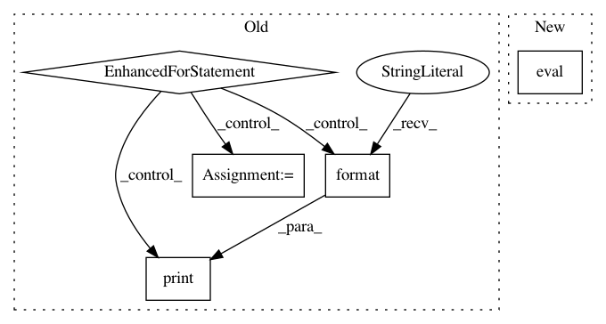

b87368e1e7fd832b505db9cc08015ac7af8f95de,VAE/main.py,,test,#Any#,115
Before Change
if cuda:
batch_data_t = batch_data_t.cuda()
batch_data = Variable(batch_data_t, volatile=True)
for i in range(0, test_data.size(0), TEST_BATCH_SIZE):
print("Testing model: {}/{}".format(i, test_data.size(0)), end="\r")
batch_data.data[:] = test_data[i:i + TEST_BATCH_SIZE]
recon_batch_data, mu, logvar = model(batch_data)
test_loss += loss_function(recon_batch_data, batch_data, mu, logvar)
test_loss = test_loss.data[0] / test_data.size(0)
print("TEST SET RESULTS:" + " " * 20)
print("Average loss: {:.4f}".format(test_loss))
After Change
def test(epoch):
model.eval()
test_loss = 0
for batch in test_loader:
batch = Variable(batch)
In pattern: SUPERPATTERN
Frequency: 3
Non-data size: 5
Instances
Project Name: pytorch/examples
Commit Name: b87368e1e7fd832b505db9cc08015ac7af8f95de
Time: 2016-12-23
Author: jvanamersfoort@twitter.com
File Name: VAE/main.py
Class Name:
Method Name: test
Project Name: cornellius-gp/gpytorch
Commit Name: c63cc933782e2de32c9fe74c18b337b2bbe0f242
Time: 2018-07-19
Author: jrg365@cornell.edu
File Name: test/examples/test_kissgp_variational_regression.py
Class Name: TestKissGPVariationalRegression
Method Name: test_kissgp_gp_mean_abs_error